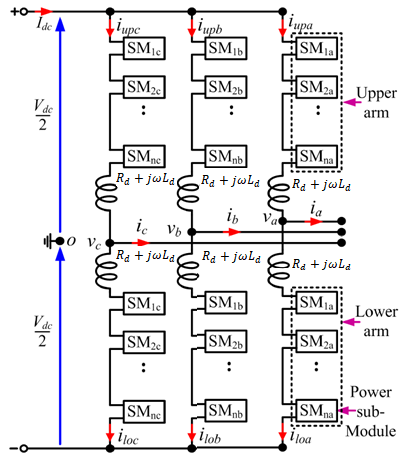
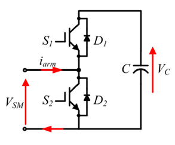
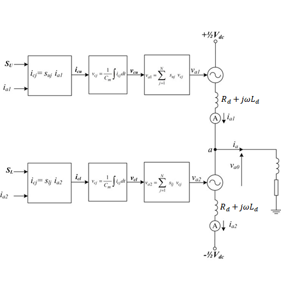
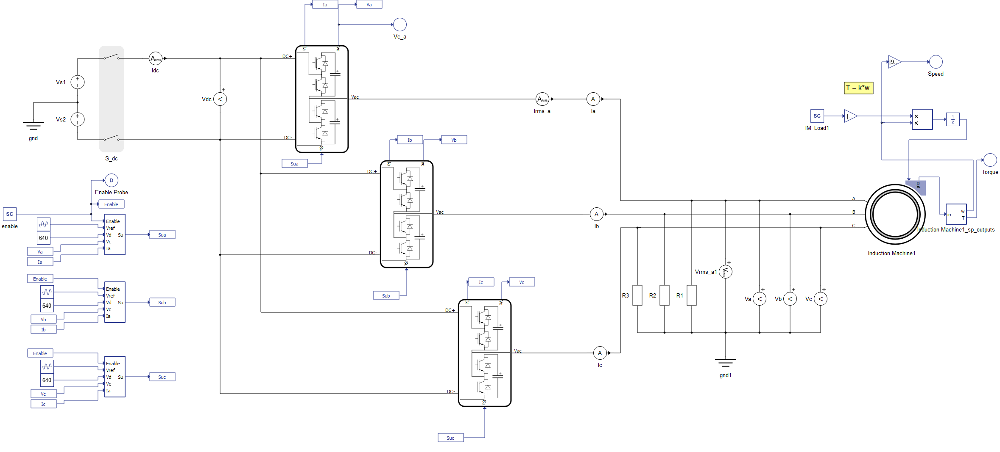
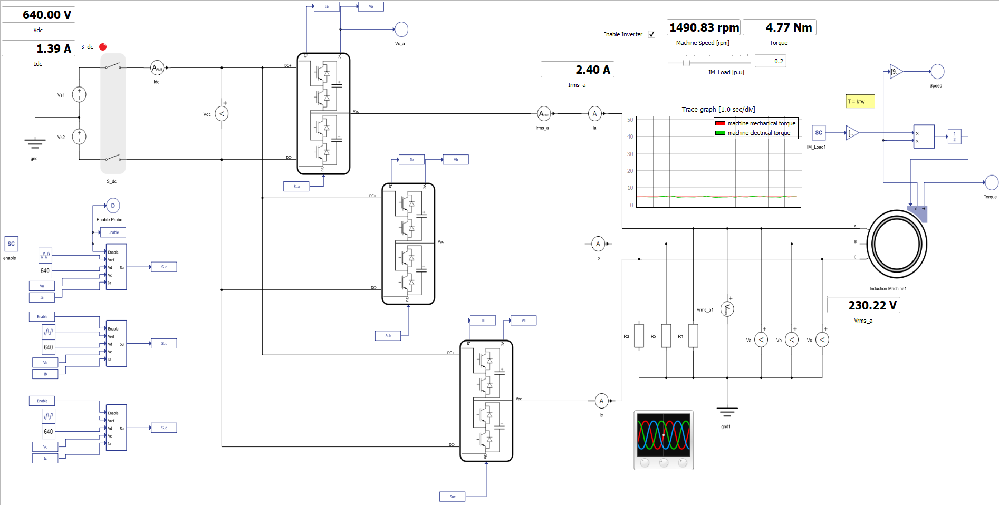
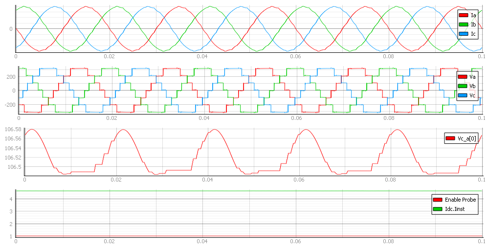
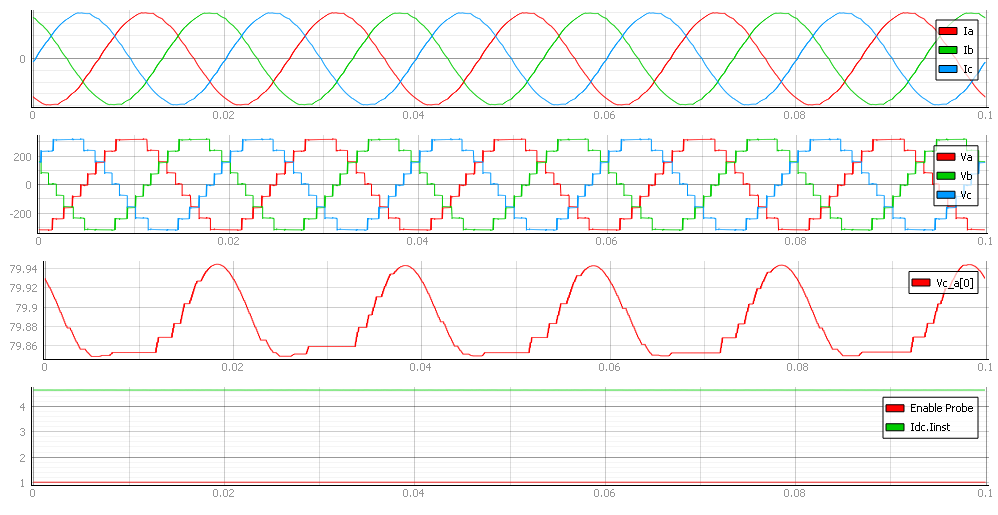
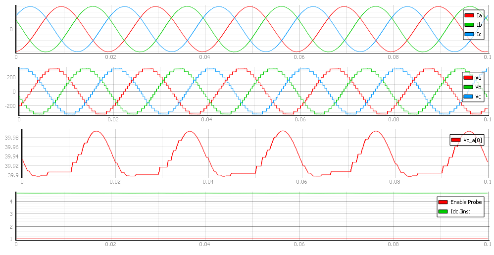

Modular Multi-level Converter (MMC) with Induction Machine
Demonstration of real-time testing of an MMC in one of its main applications: electrical drive systems.
Introduction
The main motivation for this application note is to present the possibility of modeling Modular Multilevel Converters (MMCs) in a Typhoon HIL environment. Included is a demonstration of the MMC model performance in electrical drive systems, one of its main application areas.
MMCs are an emerging and scalable topology of power converters. MMCs make it possible to produce voltages with low harmonic influence even in high voltage and power applications. The main advantages of MMCs are:
- Low harmonic influence on output voltage
- No need for output filter
- Modular configuration
- Low switch rating in relation to output voltage etc.
The typical structure of a three phase MMC is shown in Figure 1. Each phase leg of the converter has two arms, an upper and a lower. Each one is constituted by n number of sub-modules (SMs). In each arm, there is also an inductor and a resistor to compensate for the voltage difference between the upper and lower arms produced when a SM is switched in or out.

The configuration of a sub–module (SM) is given in Figure 2. Each SM is a simple chopper cell composed of two IGBT switches S1 and S2, two antiparallel diodes D1 and D2, and a capacitor C.

With reference to the SM shown in Figure 2, the output voltage has two values; when S1 is on and S2 is off or when S1 is off and S2 is on.
Figure 3 shows an MMC implementation using a switching function.

Proper operation of the MMC requires the average voltage stress across each cell capacitor and switching subcomponent to be maintained at , where is the voltage on the DC link and N is the number of levels. For phase ‘a’, the output phase voltage can either be expressed in terms of the upper arm cell capacitor voltages and a positive pole-to-ground, or in terms of the lower arm cell capacitor voltages and a negative pole-to-ground. These are described by the equations:
The voltage across each arbitrary cell capacitor (from the upper or lower arms of phase ‘a’, for example) can be expressed using the switching function:
Model description
The model consists of a DC link, three MMC Leg - Switching Functions with Nearest Level Control (NLC), and an Induction Machine. The control for the converter and mechanical model is implemented using Signal Processing Components. The control for the drive system is implemented as an open-loop using an embedded C function component. It is possible to change the number of levels in the component properties of the NLC block.

Simulation
This application comes with a pre-built SCADA panel Figure 5. The panel offers most essential user interface elements (widgets) to monitor and interact with the simulation in runtime. You can customize it freely to fit your needs.
The SCADA panel made for this MMC converter model, allows you to have a wide insight into the operation of this converter through its various widgets and scopes. On the right corner, you can change the induction machine load per unit. In the Trace graph, you can see the mechanical and electrical torque.

In Capture, you can see the currents of all three phases together with all three phase voltages. The third viewport shows capacitor voltage, as well as how the controller balances these voltages across the capacitors. The next three figures show the different behaviors of the converter at different voltage levels. The maximum number of voltage levels depends on the size of the model and the signal processing power of each HIL device.



Test Automation
We don’t have a test automation for this example yet. Let us know if you wish to contribute and we will gladly have you signed on the application note!
Example requirements
Table 1 provides detailed information about the file locations and hardware requirements for running the model in real-time, followed by the HIL device resource utilization when running the model using this minimal hardware configuration. This information is provided to help you with running and customizing the model as you see fit.
| Files | |
|---|---|
| Typhoon HIL files | examples\models\electrical drives\mmc with indm mmc with indm.tse mmc with indm.cus |
| Minimum hardware requirements | |
| No. of HIL devices | 1 |
| HIL device model | HIL402 |
| Device configuration | 1 |
| HIL device resource utilization | |
| No. of processing cores | 1 |
| Max. matrix memory utilization | 1.9% |
| Max. time slot utilization | 40.2% |
| Simulation step, electrical | 1 µs |
| Execution rate, signal processing | 100 µs |
References
[1] Prafullachandra M. Meshram, and Vijay B. Borghate, “A Simplified Nearest level control (NLC) Voltage Balancing Method for Modular Multilevel Converter (MMC)” DOI 10.1109/TPEL.2014.2317705, IEEE Transactions on Power Electronics
Authors
[1] Simisa Simic